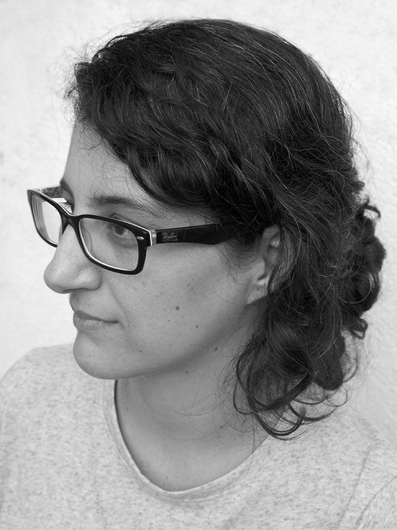

Diana Veiga
Planificación y seguimiento



- Creatividad
- Perseverancia
- Responsabilidad
- Geek
- Maker
Para esta receta la materia prima se encuentra en las costas gallegas, concretamente en las Rías Baixas. Ésta se ha de preparar previamente, y para ello le daremos unos toques de ilustradora y diseñadora. Ahora ya suavizada, la sumergimos en un mundo tecnológico para “asustarla“, de 3 a 4 veces.
Pasado un tiempo, emerge con curiosidad por el desarrollo frontend. Para saciar la inquietud espolvoreamos generosamente el mejor de los pimentones, Adalab©.
Este plato está indicado cuando hay que planificar tiempos y tareas, liderando el reparto de raciones. Es la elección perfecta a la hora de equilibrar, ajustar y valorar el proyecto de principio a fin.